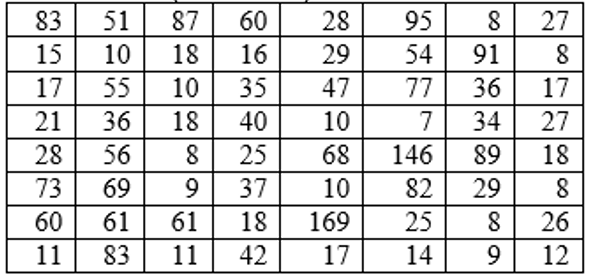
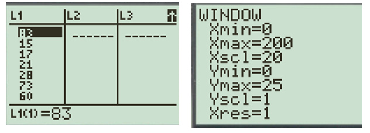
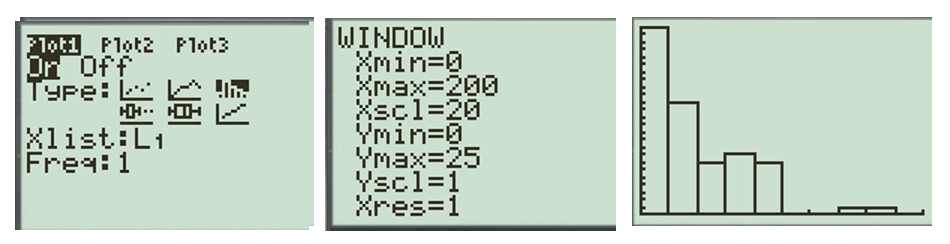
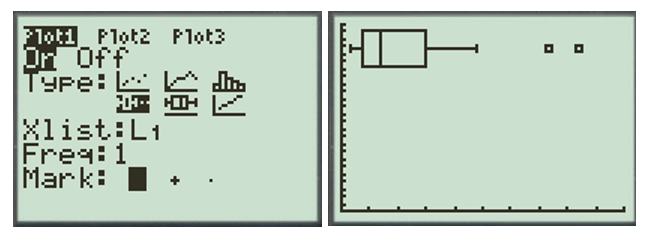
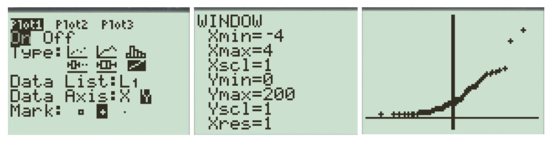
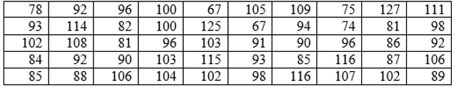
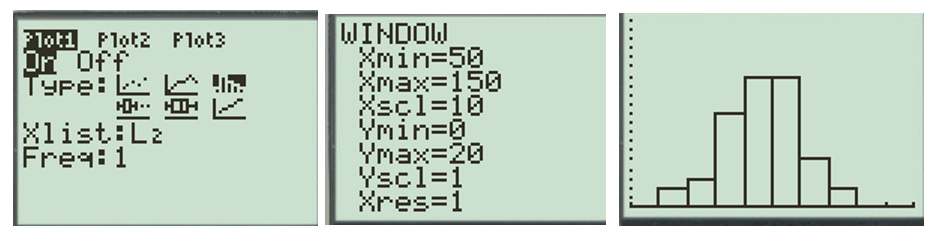
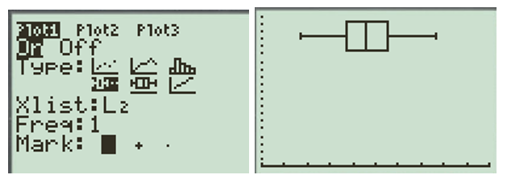
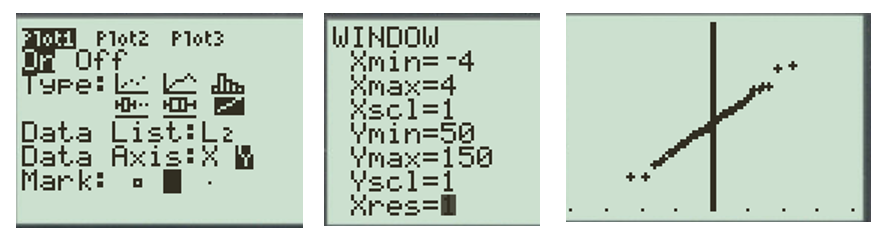

Objectives
At the end of this section you will be able to:
-
Determine if a variable is normally distributed.
-
Assess normality with histogram, boxplot, and quantile plot.









qqnorm(Kiama)
hist(Kiama)
boxplot(Kiama)
Evaluate(R) button to construct the graphs within the webpage.